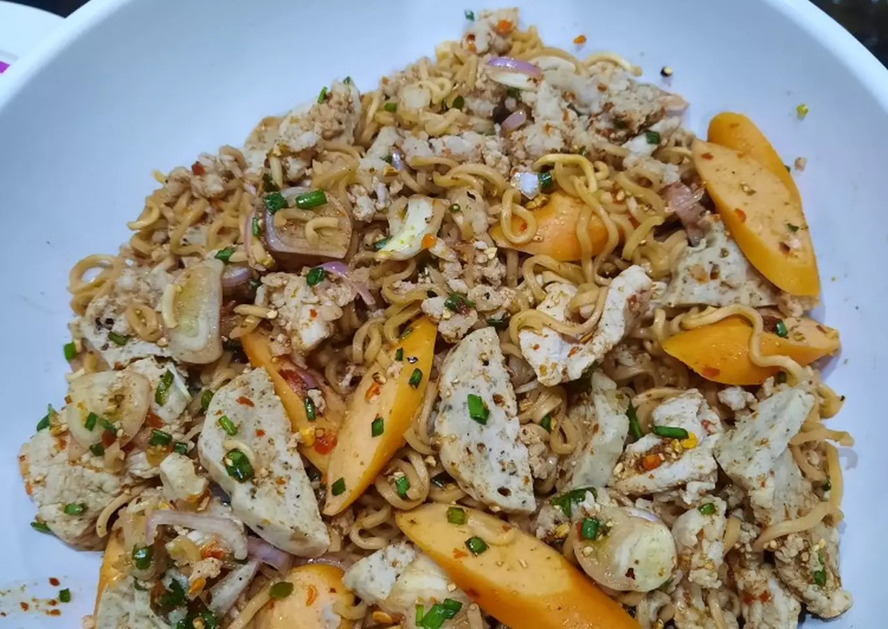

ลาบมาม่า สูตรเด็กหอ
Karn
ลาบง่ายๆ มีอะไรก็ใส่รวมๆ กันไป

ส่วนผสม
- บะหมี่กึ่ง 2 ห่อ
- หมูสับ 1 ถ้วย
- เครื่องอื่นๆ เช่น กุ้ง หมึก ไส้กรอก รวมกัน 1 จาน
- มะนาว 3 ลูก
- น้ำปลา 1 ทัพพี
- น้ำตาล ครึ่งทัพพี
- พริกป่น แล้วแต่ความเผ็ดที่ชอบ
- ข้าวคั่ว ชอบมากใส่มาก ชอบน้อยใส่น้อย
- หอมแดงซอย ชอบมากใส่มาก ชอบน้อยใส่น้อย
- ต้นหอมซอย ชอบมากใส่มาก ชอบน้อยใส่น้อย
ขั้นตอนการทำ
-
ผสมน้ำลาบ ใส่น้ำตาล น้ำปลา มะนาว พริกป่น และข้าวคั่ว ผสมในภาชนะใหญ่ๆ
ที่คนง่ายๆ นะ เช่นชามผสม
- ต้มน้ำให้เดือดแล้วลวกเครื่องต่างๆ พักไว้ อย่าเพิ่งทิ้งน้ำลวกนะ
-
เอาเครื่องที่ลวกร้อนๆ ใส่ลงไปในน้ำลาบ ใส่น้ำลวกลงไปด้วยซักทัพพีนึง
จะได้ไม่แห้งเกิน
- คนให้เข้ากัน ค่อยๆ ตะล่อมนะ เดี๋ยวเส้นขาดหมด
- ใส่หอมแดงกับต้นหอมแล้วคนอีกนิดนึง
- เสร็จละจ้าาา กินกันให้เปรมมมม
กลับหน้าหลัก